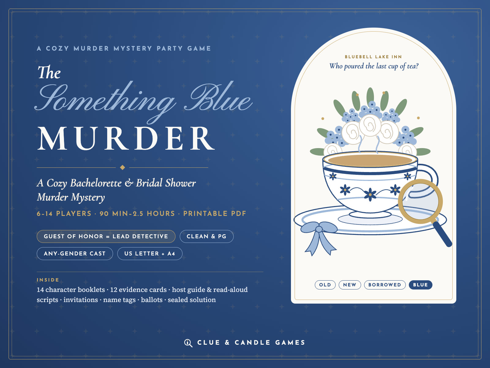
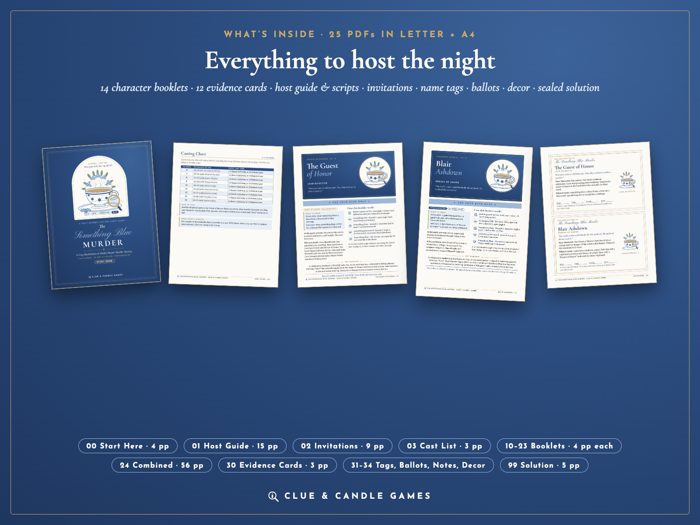
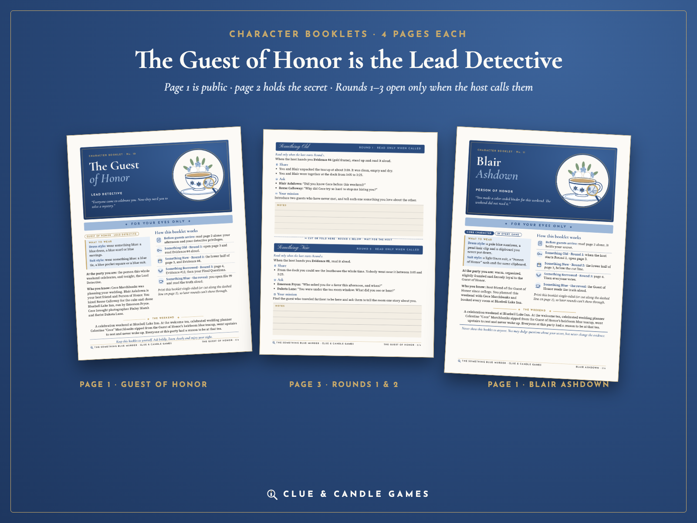
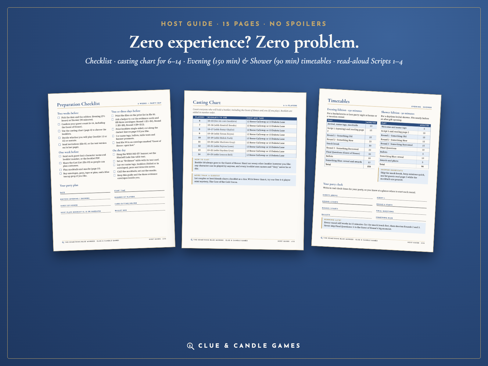
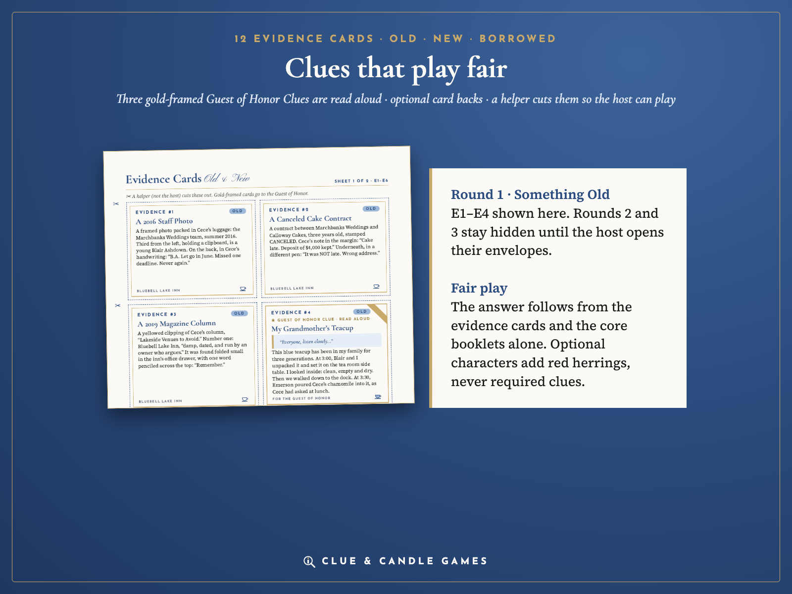
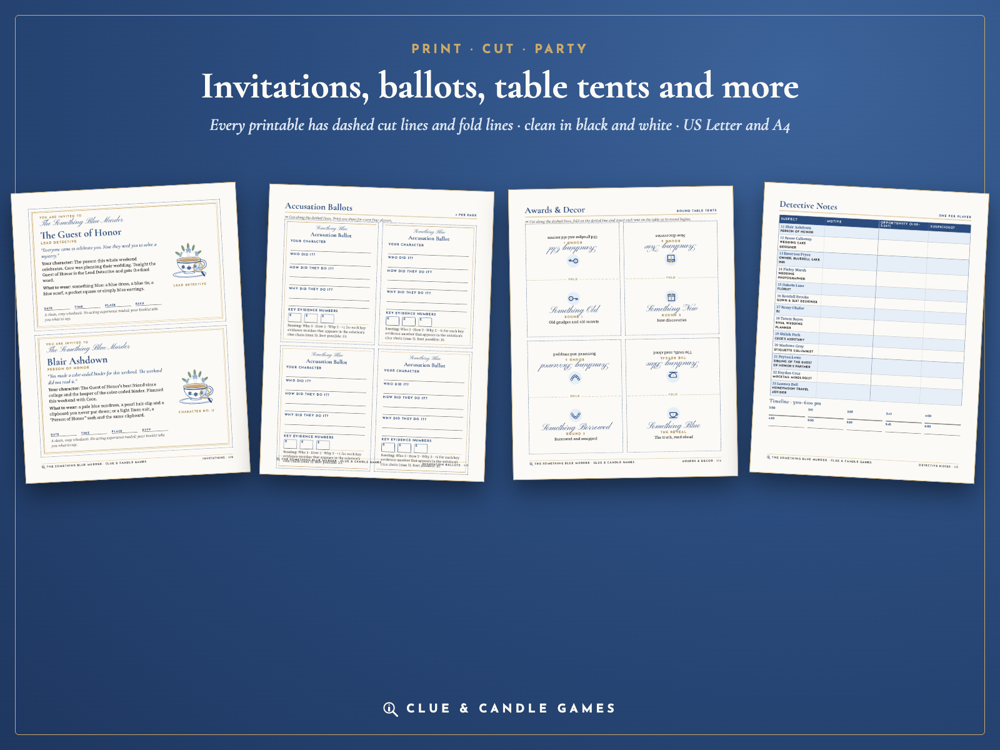

A clean, cozy murder mystery party where the Guest of Honor plays the Lead Detective. 6–14 players · 90 minutes to 2.5 hours · printable PDF. US Letter and A4, from Clue & Candle Games, the party-games imprint of Hustle Studio.

$17.00 USD, one-time, for the whole party
Buy now: $17If it isn't right for your party, you get a full refund within 14 days. Email chenphien@gmail.com within 14 days of purchase with your order email. We refund the full $17 through Waffo to your original payment method. You don't need to give a reason, and you don't need to have played it (see Terms). We reply within 2 business days.
🔒 Secure checkout. Payment is handled by Waffo Pancake, our merchant of record. Waffo processes the payment, handles any sales tax or VAT that applies and emails you a receipt. We never see your card details.
📥 Instant download. Right after payment you land on your download page with the ZIP and every PDF on its own. Nothing is shipped, and there's no subscription.
Every picture below shows real, unedited pages from the PDFs: Host Guide pages (checklist, casting chart, timetables), page 1 of two character booklets and a page of Round 1 prompts, and the first evidence sheet with cards E1–E4. Nothing shown here gives away the answer or says who is innocent; Round 2 and Round 3 evidence is not shown.





It's a celebration weekend at Bluebell Lake Inn. At the welcome tea, celebrated wedding planner Celestine "Cece" Marchbanks sips chamomile from the Guest of Honor's heirloom blue teacup, the family's "something blue." Cece goes upstairs to rest and is later found dead. The baker, the innkeeper, the photographer, the florist and the Person of Honor all had a reason to be at that tea, and a few had a reason to be cross with Cece.
The person you're celebrating gets their own booklet as the Lead Detective. In each round the host hands them a gold-framed clue to read aloud, and before the vote they ask three people one question each. At the end, the Guest of Honor opens the sealed solution and reads the reveal.
The night runs in three rounds: Something Old (old grudges), Something New (fresh discoveries) and Something Borrowed (things borrowed and moved), then the vote and the reveal, Something Blue. In every round, players share information, ask two named characters a question and try a small social mission, like finding a guest they've never met. That helps when two friend groups don't know each other yet.
It works for a hen party in the UK or Australia (A4 files included), a bachelorette weekend at an Airbnb, or a bridal shower between brunch and gifts. Booklets are separate PDFs, so you can text one to a guest and they can read it on their phone.
Every booklet is 4 pages: page 1 is public (name, role, two outfit ideas: a dress style and a suit style, and how the booklet works); page 2 holds the secret and alibi, read alone before the party; pages 3 and 4 hold the three rounds and note space, opened only when the host calls them. Each round gives things to share, two questions for named characters and a small mission.
Yes. Every step of the answer can be worked out from the 12 evidence cards, the Guest of Honor's booklet and the innocent core booklets; optional characters add red herrings, never required clues. The 5-page solution lays out the six-step clue chain and explains why each of the other 12 suspects is innocent. The story was written with AI assistance, then edited and checked clue by clue for fair play and timeline consistency. If you still find a gap in the logic, tell us: you get your refund, and we fix the file.
The same 25 PDFs in US Letter and in A4 (50 PDFs, 159 pages per paper size), plus 1 ZIP that holds everything. After purchase every file can also be downloaded on its own from your download page. You only print what your party size needs; file 00 gives the exact print list for 6–14 players. File 24 is optional (the same 14 booklets in one file).
| # | File (in both US-Letter/ and A4/) | Pages |
|---|---|---|
| 00 | Start Here: file guide, print list for 6–14 players, 6 FAQs | 4 |
| 01 | Host Guide: checklist, casting chart for 6–14, Evening (150 min) and Shower (90 min) timetables, Scripts 1–4, how to reveal, hosting tips with icebreakers for two friend groups, 3 mocktails and 3 snacks, vacation rental packing list, printing tips. No spoilers. | 15 |
| 02 | Invitations: 14 character invitations (2 per page), 1 open invitation plus a "How the night works" guest card, and a text version for email or group chat | 9 |
| 03 | Cast List: the victim, the Guest of Honor and all 13 suspects, with public bios and costume ideas | 3 |
| 10 | Booklet: The Guest of Honor (Lead Detective) | 4 |
| 11–15 | Booklets: Blair Ashdown, Reese Calloway, Emerson Pryce, Finley Marsh, Dakota Lane (5 core suspects) | 4 each |
| 16–23 | Booklets: Kendall Brooks, Remy Okafor, Tatum Reyes, Shiloh Park, Marlowe Gray, Peyton Lowe, Hayden Cruz, Lennox Bell (8 optional suspects) | 4 each |
| 24 | All Booklets Combined (the same 14 booklets in one file) | 56 |
| 30 | Evidence Cards: 12 cards (E1–E12, including 3 Guest of Honor Clues) plus optional card backs | 3 |
| 31 | Name Tags: 14 character tags, 4 blank tags and a Guest of Honor rosette badge | 2 |
| 32 | Accusation Ballots: 4 per page, with scoring | 1 |
| 33 | Detective Notes: suspect grid and a 3:00–6:00 pm timeline | 1 |
| 34 | Awards & Decor: 4 round table tents, a 9-pennant "WHO DID IT?" banner, 2 table signs, 3 award certificates | 4 |
| 99 | Solution, Open Last (sealed): the answer, six-step clue chain, "why not the others," Script 5 and scoring | 5 |
ZIP structure
The-Something-Blue-Murder_ClueAndCandleGames.zip ├── US-Letter/ (25 PDFs) │ ├── 00-START-HERE.pdf │ ├── 01-Host-Guide.pdf │ ├── 02-Invitations.pdf │ ├── 03-Cast-List.pdf │ ├── 10-Booklet-Guest-of-Honor.pdf Lead Detective │ ├── 11-Booklet-Blair-Ashdown.pdf ┐ │ ├── 12-Booklet-Reese-Calloway.pdf │ │ ├── 13-Booklet-Emerson-Pryce.pdf │ 5 core suspects │ ├── 14-Booklet-Finley-Marsh.pdf │ │ ├── 15-Booklet-Dakota-Lane.pdf ┘ │ ├── 16-Booklet-Kendall-Brooks.pdf ┐ │ ├── 17-Booklet-Remy-Okafor.pdf │ │ ├── 18-Booklet-Tatum-Reyes.pdf │ │ ├── 19-Booklet-Shiloh-Park.pdf │ 8 optional suspects │ ├── 20-Booklet-Marlowe-Gray.pdf │ │ ├── 21-Booklet-Peyton-Lowe.pdf │ │ ├── 22-Booklet-Hayden-Cruz.pdf │ │ ├── 23-Booklet-Lennox-Bell.pdf ┘ │ ├── 24-All-Booklets-Combined.pdf │ ├── 30-Evidence-Cards.pdf │ ├── 31-Name-Tags.pdf │ ├── 32-Accusation-Ballots.pdf │ ├── 33-Detective-Notes.pdf │ ├── 34-Awards-and-Decor.pdf │ └── 99-SOLUTION-Open-Last.pdf └── A4/ (the same 25 PDFs in A4 size)
| Players | Booklets |
|---|---|
| 6 | 10–15 (Guest of Honor + 5 core suspects) |
| 7 | 10–16 |
| 8 | 10–17 |
| 9 | 10–18 |
| 10 | 10–19 |
| 11 | 10–20 |
| 12 | 10–21 |
| 13 | 10–22 |
| 14 | 10–23 |
The cast tops out at 14 characters. With more than 14 guests, couples or best friends can share a booklet as a duo (that is still 14 characters, not more).
The Case of the Cold Cocoa is a free 10-page printable mini mystery for 4–6 players (about 45 minutes) from the same team: suspects, host scripts, evidence cards, ballots and a solution with its full clue chain. No email or signup needed. Play it to judge our writing and fairness before you spend anything.
Download the free mini mystery (PDF)What The Something Blue Murder adds over the free one:
Can the host play?
Yes. The Host Guide never reveals the answer. Take booklet 12 or 15 as listed in the casting chart, and ask a helper to cut the evidence cards so you haven't seen them either.
Is it OK for grandma / coworkers?
Yes. It's PG: no adult jokes, no flirting, no drinking tasks and nothing gory. Cece lies down for a nap and is found dead later; nothing is described in detail.
Does it work for a groom or a mixed party?
Yes. The lead is always "the Guest of Honor," never bride or groom, and every booklet uses names and "they."
Can we play at an Airbnb?
Yes. Print at home and pack the kit; the Host Guide includes a vacation rental packing list. Booklets are separate PDFs, so guests can also read them on their phones.
Do we have to drink?
No. There are no drinking tasks, and the three drink ideas in the Host Guide are all mocktails.
Black-and-white printing?
Yes. Text is near-black on light pages, and every round and card type is labeled in words, not only by color.
Are there reviews or party photos?
Not yet. Clue & Candle Games is a new brand, so there are no reviews or customer photos yet, and we won't invent any. That's why this page shows real interior pages, offers a free mini mystery to try first, and backs every purchase with a 14-day no-questions refund.
The story was written with AI assistance. Does the logic hold up?
We edited it and checked it clue by clue against the solution: each of the six steps in the clue chain points to the evidence card or booklet line it relies on, and every other suspect has a written reason they're innocent. If your group finds a hole, email us within 14 days for a full refund.
How do checkout and refunds work?
Checkout is run by Waffo Pancake, the merchant of record: it takes the payment, handles applicable sales tax/VAT and emails your receipt. For a refund, email chenphien@gmail.com within 14 days with your order email; the refund goes back to your original payment method.
Licence?
Personal use: print as many copies as you need for your own parties. Please don't resell or share the files publicly. All names, places and events are fictional.
$17.00 USD, one-time
Buy now: $17🔒 Secure checkout by Waffo Pancake (merchant of record). Instant download. 14-day no-questions refund: if it isn't right for your party, you get your money back. Digital download only; nothing is shipped.